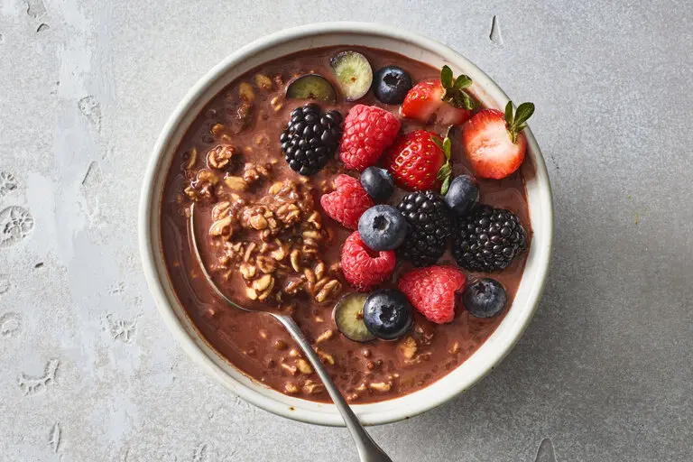

Homepage
Description
This recipe will show you how to make a high calories filling breakfast with a good amount of fibre
Ingredients
- 100g of oats
- 250ml of whole milk
- 30g chia seeds
- 30g honey
- 10g coco powder
Steps
- Get a bowl with a lid and add the dry ingredients
- Then add the wet ingredients and add the lid
- Give the mixture a good shake for 60 seconds then taste
- Leave if the fridge for 10 to 12 hours before eating
- Optional - add berries or banana when served